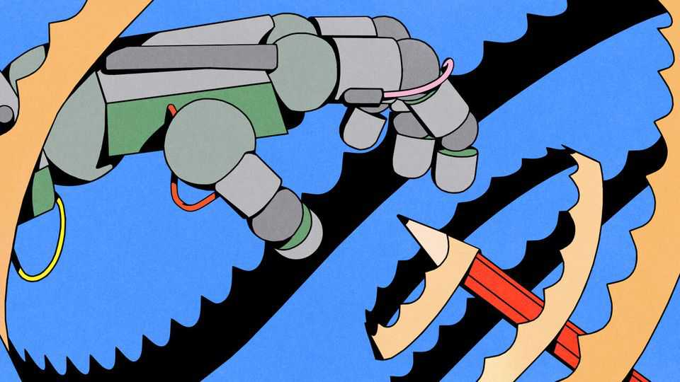

AI is getting better at writing. Humans must get better at editing
Our investigation suggests how

Jul 30th 2026
WRITING IS HARD. For Franz Kafka, putting words on the page was a process of “unending torments”. George Orwell said it felt like “a long bout of some painful illness”. Hunter S. Thompson, a journalist, saw it as the opposite of sex: “only good when it’s over”. Now AI has come to the rescue. Large language models (LLMs) eagerly offer reams of text without any pain or torment. Bots can spew out emails (excellently), longer prose (passably) and poetry (poorly). To them, writer’s block is a 500-sheet pack of paper: any user of an LLM can produce as many words in a day as Kafka did in his life.
For human writers this is a blessing and a curse. If you claim to be an author but use AI, you look like a fraud—bot-busting tools like Pangram are good at spotting when someone has had an AI helping hand. Take the hundreds of people who have used LLMs to write applications for The Economist’s internships, or the government ministers who have submitted AI-generated works to our By Invitation column (it’s tempting, but we won’t name them).
Our investigation of the stylistic quirks of the big bots reveals how, with every update, AI writing is getting closer to human writing. We compared the outputs of LLMs to prose we know is produced by humans: our own. We asked 14 variants of ChatGPT, Claude, Gemini and Grok released since 2024 to write versions of our articles without consulting the web. We compared our corpus across 55,940 sentences and 1.2m words, and checked our results against other newspapers and hit fiction books. We found that some of AI’s former tricks—using lots of em-dashes, for instance, or words like “leveraging”—are no longer leveraged much in its writing.
It’s a good thing that AI writing is getting better. Sifting through today’s slop is a drain on your brain and your time. LLMs have tripled the number of new e-books published on Amazon every month, to 300,000, a recent study found, and draft more than a third of new websites by one count.
If LLMs keep improving, in a few years they could be as good as professional wordsmiths. In the meantime, though, their baggy prose puts a premium on editing skills. After all, even the best writers need a good editor to keep them sharp. Editing is something The Economist deals with day in, day out, so here are our tips for re-writing AI prose.
First, commission well. George R.R. Martin once said the job of editors is to “clip the wings” of writers, and “tell them in which direction to fly”. When it comes to LLMs, that means giving clear instructions about exactly what you want, and asking them to refine their output as many times as necessary. You’ll get less pushback from machines than men. Mr Martin said editors were “the writer’s natural enemy”; AI would probably say “great observation!” and “love the enemy analogy!”
Second, pay attention to detail. AI writers will make mistakes and offer phrases that sound good but mean nothing. They like to lavish their prose with Latinate words, talking about the “bi-directional flow” and how to “expedite grid enhancements”; remind them that Anglo-Saxon words are often punchier. They like clichéd metaphors: there are lots of “Achilles’ heels”. And AI tends to use the “rule of three” far more than humans. The Economist also likes this rhetorical trick. But whereas we try to group three sensible bits of advice, AI offers such redundant sentences as: “The mystery has been solved—not partially, not ambiguously, but definitively.” Such lines should be cut—definitively.
Finally, know your audience. The editor is an intermediary between writer and reader. LLMs are sycophants and their smarmy tone is often off-key. If you are writing an email to break some bad news to your boss, tell your bot to skip the exclamation marks. AI can be pretentious or pontificating (it was trained on human writing, after all). Most people are short of time, but a verbose AI pins you to the wall like a bore at a party.
“Write drunk, edit sober,” goes the old writers’ maxim. If that’s right, when the AI-human team gets down to work, the AIs will have all the fun. ■